Gallery
Galerie
المعرض


 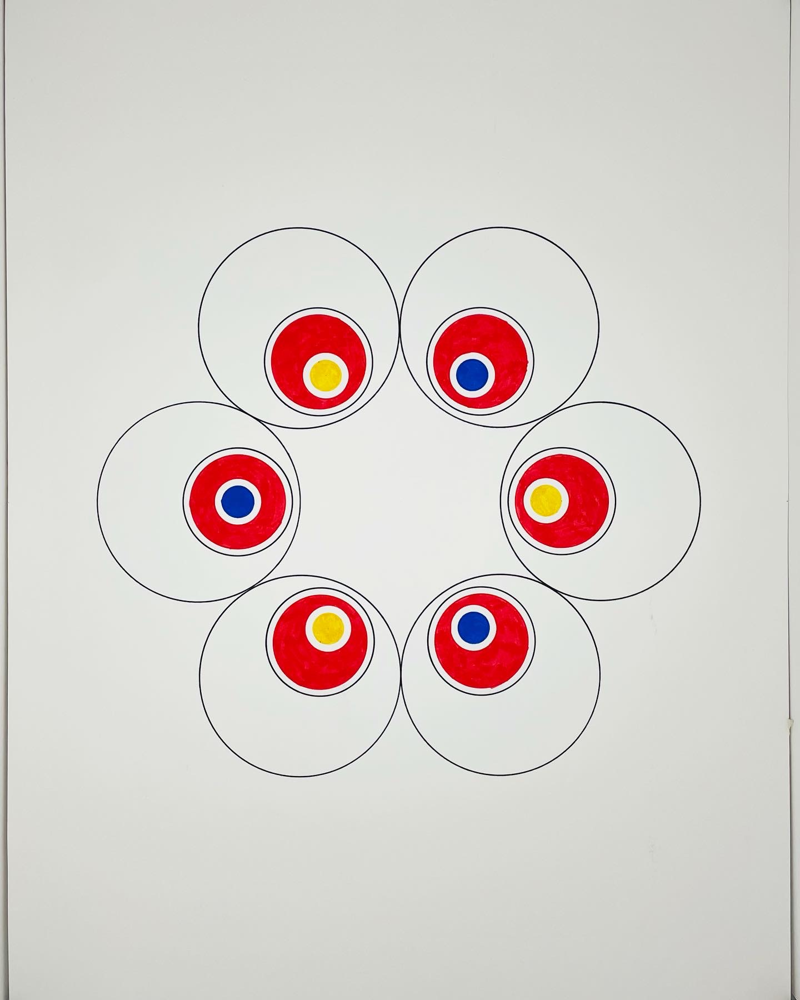
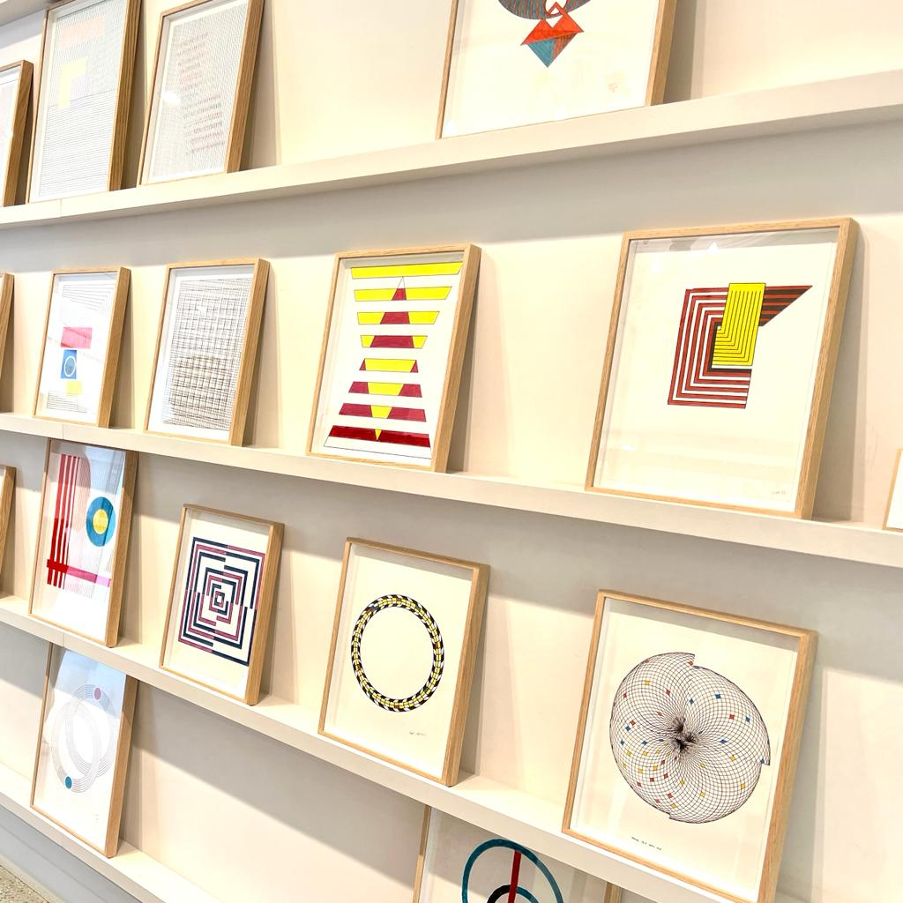
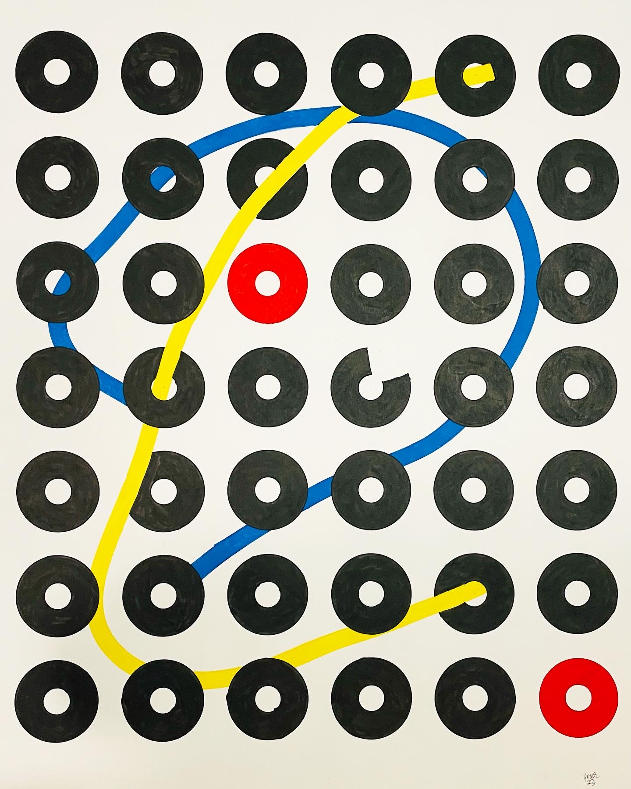
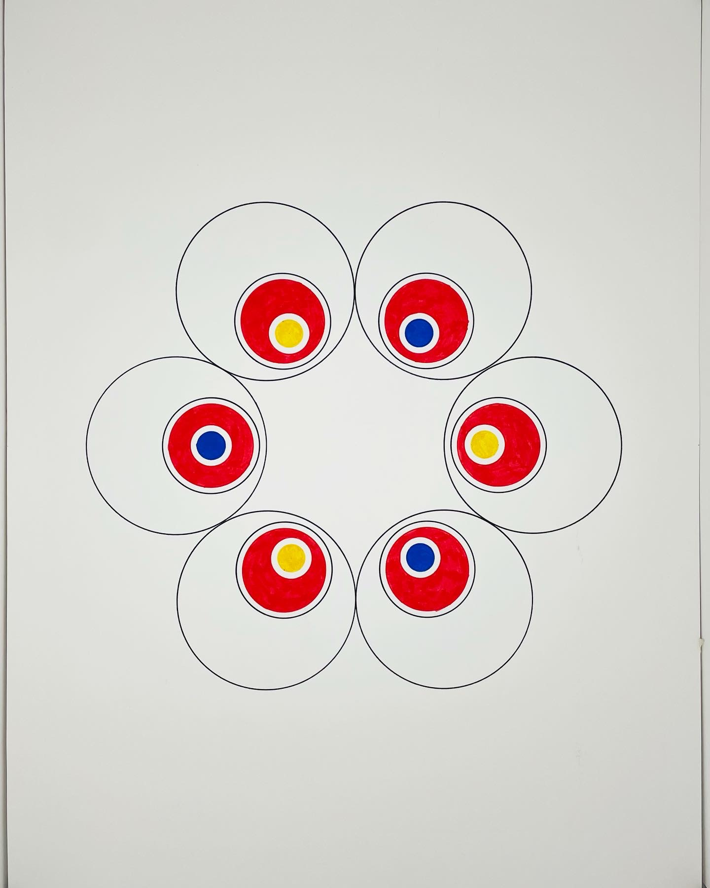
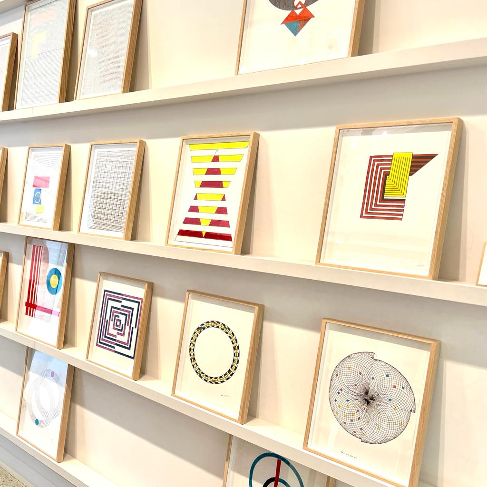
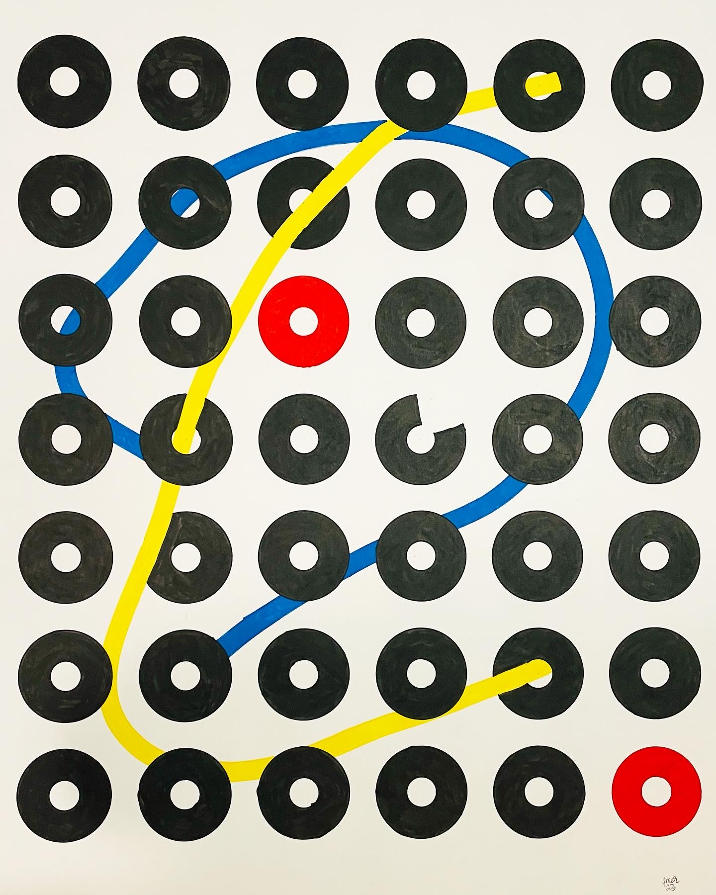
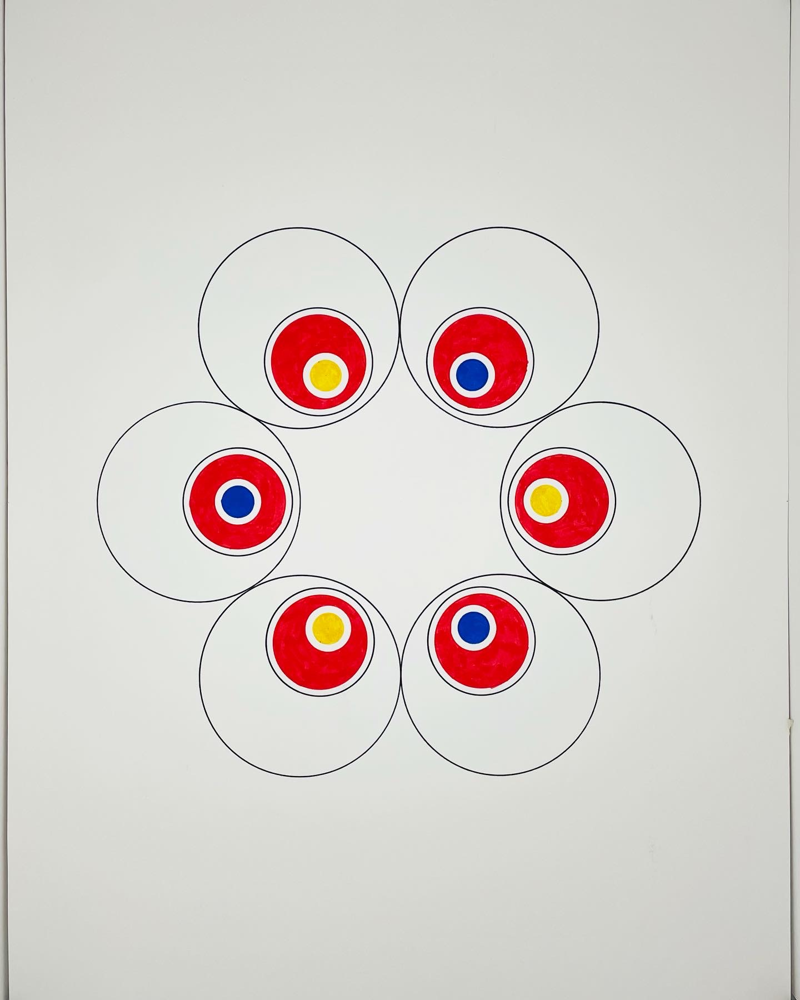
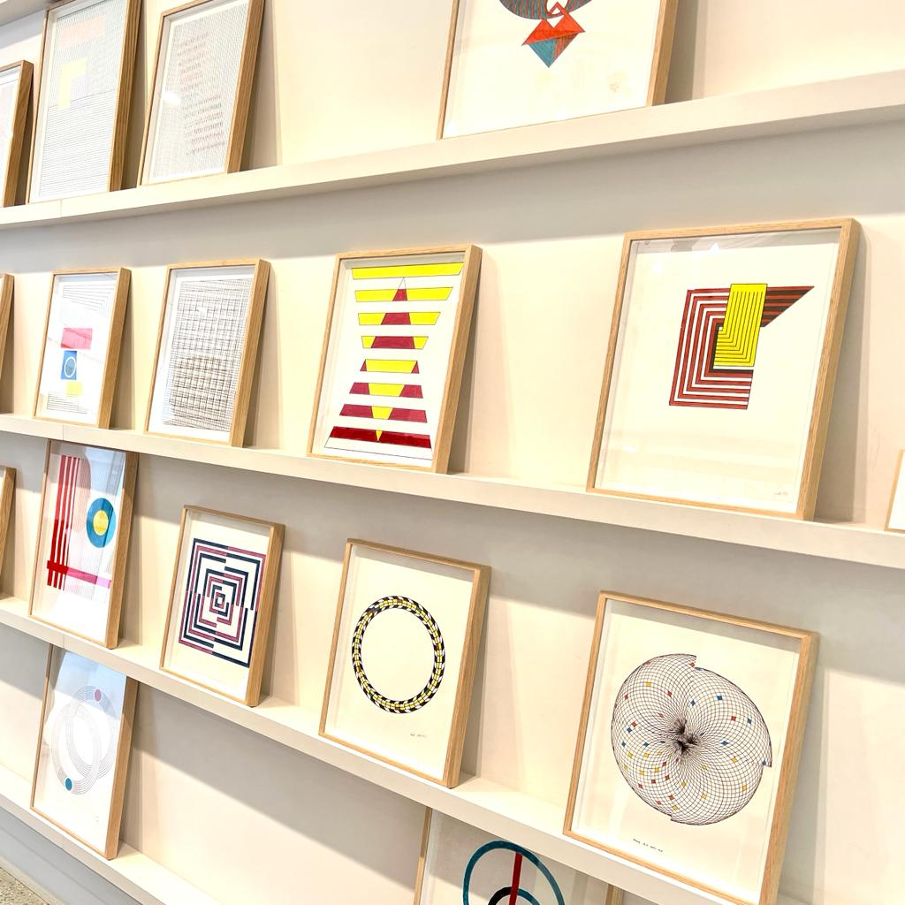
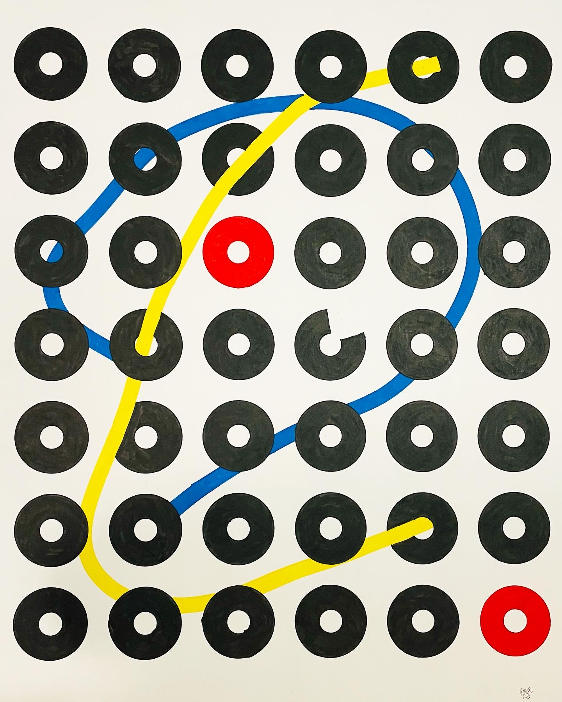
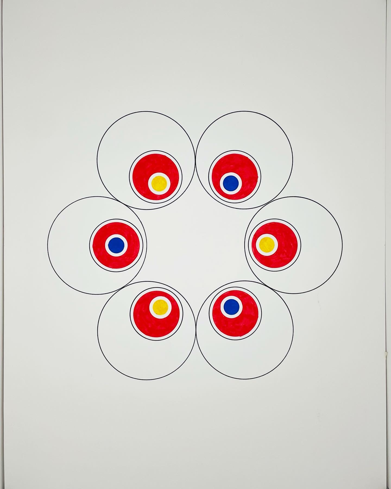
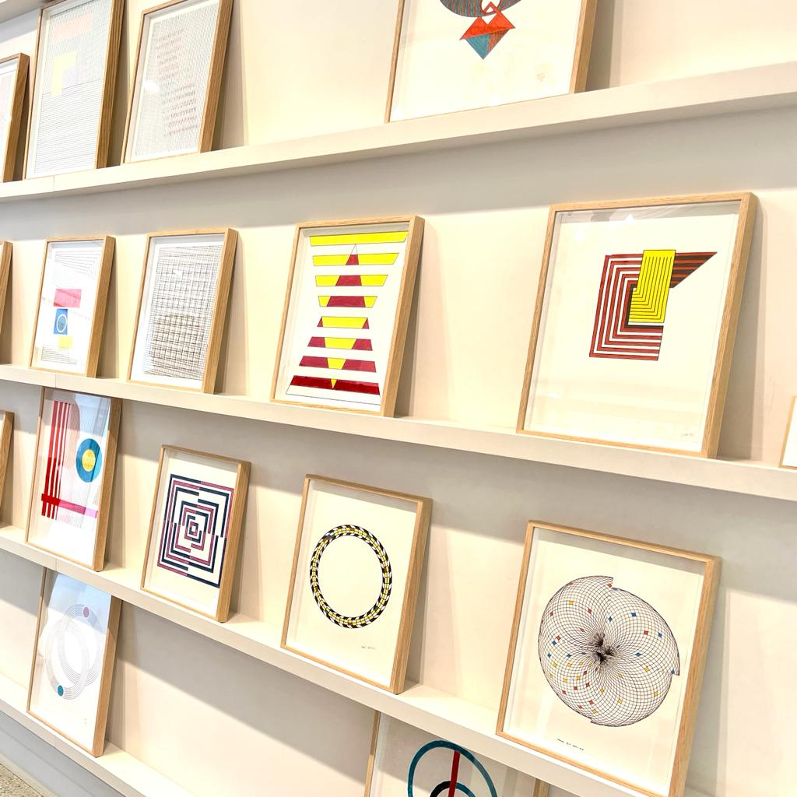
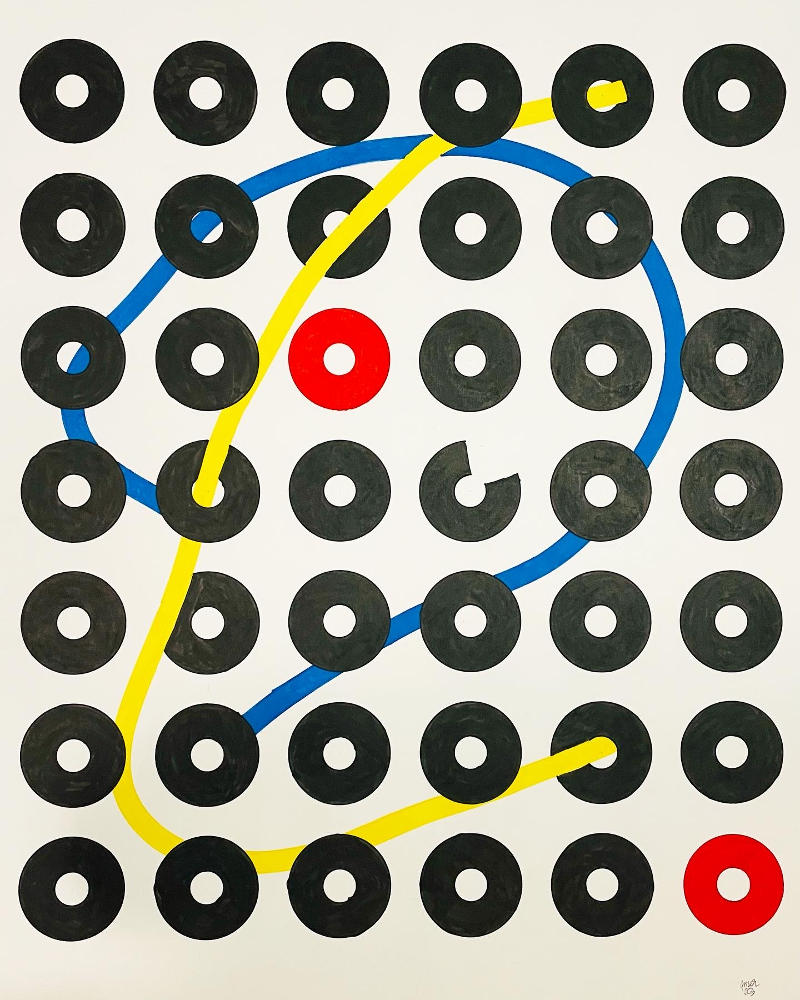
Standfirst: As a new exhibition of his colourful, geometric work opens at Rue de Grenelle and Boulevard Raspail, we sat down with Amer Musa to discuss why art is therapy for him and why he feels lucky to live in Paris, a city filled with art.
When Amer Musa left Sudan as a refugee in 2014, he had never contemplated becoming an artist. In fact, he’d never even drawn before. But when he arrived in France in 2017 and found himself homeless on the streets of Paris, he began to sketch. He needed an outlet for his anxiety and started to see drawing as a form of therapy. And he didn’t stop.
Which brings us today. Juggling a full-time job in the studio of a fashion designer, we’re delighted that he’s opening a new exhibition of his works at our Rue de Grenelle and Boulevard Raspail shops in Paris. To mark the occasion, we spoke to him about how art gave a new meaning to his life and why he’s still not sure he considers himself a “fully-fledged artist” – and on that, we agree to disagree.
As an amateur, I discovered my love for drawing and creating in the most unlikely of circumstances. In 2017, as a homeless immigrant in Paris, I found solace and escape in public libraries where I started sketching and experimenting with colours. Sketching was a means to keep me busy and avoid the toxicity of my condition, soon it became a passion that brought meaning and an aim to my life. However, I don't yet consider myself as a full-fledged artist, I just know that art is the driving force behind my dreams and aspirations. Living in a city where art is ubiquitous, makes me feel lucky.
I work primarily with markers and oil pastels because I enjoy the touch and the unique effects that these materials create in my work. Moreover, these materials allow me to work quickly and spontaneously without waiting for them to dry. I also enjoy creating simple geometric shapes and abstract drawings.
My inspiration comes from different sources, sometimes it's just a feeling or an emotion that I want to express through my art, sometimes it's a beautiful landscape or a situation that catches my attention. Nature, music, movies, and the works of other artists often inspire me. I believe that inspiration can come from everywhere.
Self-expression and therapy. I express myself through my drawings, showing emotions that are hard to express otherwise. Drawing is therapeutic and fills me with positive energy. It also helps me understand myself better.
I hope that people feel a personal and emotional connection to the work. I believe that art should evoke a response, whether joy, contemplation, or even discomfort. I hope viewers take time to engage with the details and story behind my drawings.
It allows me to see beauty in unexpected places and approach challenges creatively. I’ve learned to embrace the unknown and adapt to change through my art.
Creating art brings me immense joy and relief. I feel a sense of flow that is hard to describe, and I try to capture that feeling in my compositions of lines, colors, and spaces.
I like listening to music, podcasts, or sometimes staying in silence. I don’t have a studio—I work at the same table where I eat—but I always prepare an empty, clean space before I start drawing.
Chapeau : À l’occasion de l’ouverture de son exposition de dessins géométriques et colorés aux boutiques Rue de Grenelle et Boulevard Raspail, nous avons rencontré Amer Musa pour parler de son parcours, de l’art comme thérapie, et de sa vie à Paris.
Lorsque Amer Musa a quitté le Soudan en 2014 comme réfugié, il n’avait jamais imaginé devenir artiste. En 2017, arrivé à Paris et vivant dans la rue, il a commencé à dessiner. Le dessin est vite devenu une thérapie, un moyen d’échapper à son anxiété. Et il n’a jamais arrêté.
Aujourd’hui, en parallèle de son travail à plein temps dans un atelier de mode, Amer inaugure une nouvelle exposition à Paris. Pour l’occasion, il nous parle de la place de l’art dans sa vie et de son sentiment d’être encore un “artiste amateur”.
J’ai découvert mon amour pour le dessin dans les circonstances les plus improbables. En 2017, sans abri à Paris, je me réfugiais dans les bibliothèques pour dessiner et expérimenter. Peu à peu, c’est devenu une passion qui a donné un sens à ma vie.
J’utilise principalement des marqueurs et des pastels à l’huile. Ces outils me permettent de travailler vite, spontanément, et de créer des formes géométriques simples et des abstractions qui définissent mon style.
Elle vient des émotions, de la nature, des paysages, des situations quotidiennes, de la musique, du cinéma et des œuvres d’autres artistes. L’inspiration est partout.
Une forme d’expression personnelle et de thérapie. Dessiner me donne de l’énergie positive et m’aide à mieux me comprendre.
J’espère que mes dessins créent une connexion personnelle avec le spectateur et suscitent des émotions, qu’elles soient joyeuses ou contemplatives.
Il me permet de voir la beauté dans l’imprévu et d’aborder les défis avec créativité. Il m’a appris à accueillir l’inconnu.
Je ressens une joie et un apaisement profonds, un flux créatif que j’essaie de retranscrire dans mes lignes et couleurs.
J’écoute de la musique ou je travaille en silence, et je prépare toujours un espace vide et propre avant de commencer.
مقدمة: بمناسبة افتتاح معرضه الجديد لأعماله الهندسية والملونة في باريس، جلسنا مع عامر موسى لنتحدث عن رحلته وكيف أصبح الفن علاجه ولغته الخاصة.
عندما غادر عامر موسى السودان كلاجئ عام 2014، لم يكن قد فكر يومًا في أن يصبح فنانًا. وفي عام 2017، عندما كان يعيش بلا مأوى في شوارع باريس، بدأ بالرسم في المكتبات كهروب من القلق والتوتر. وسرعان ما أصبح الرسم علاجه ورفيقه.
اليوم، إلى جانب عمله بدوام كامل في استوديو للأزياء، يفتتح عامر معرضًا جديدًا في باريس. يتحدث عن كيف غيّر الفن معنى حياته ولماذا لا يزال يعتبر نفسه فنانًا هاويًا.
اكتشفت حبي للرسم في ظروف لم أتوقعها أبدًا. في عام 2017، كنت بلا مأوى وأمضي وقتي في المكتبات أرسم وأجرب الألوان. أصبح الرسم شغفًا أعطى معنى وهدفًا لحياتي.
أعمل بشكل أساسي باستخدام الأقلام الملونة وطباشير الزيت لأنها تمنحني حرية وسرعة في الرسم وتسمح لي بابتكار أشكال هندسية وتجريدية تعبر عن أسلوبي.
الإلهام يأتي من كل مكان: المشاعر، الطبيعة، المناظر، المواقف اليومية، الموسيقى، الأفلام، وأعمال الفنانين الآخرين.
هي تعبير عن الذات وشكل من أشكال العلاج النفسي. الرسم يمنحني طاقة إيجابية ويساعدني على فهم نفسي أكثر.
آمل أن تخلق رسوماتي صلة شخصية مع المشاهد وتثير لديه مشاعر، سواء كانت فرحًا أو تأملًا.
الفن يجعلني أرى الجمال في التفاصيل الصغيرة وأواجه التحديات بعقلية إبداعية.
أشعر بفرح وطمأنينة كبيرة، وكأنني في حالة تدفق إبداعي أحاول أن أعكسها في الخطوط والألوان.
أحيانًا أستمع للموسيقى أو أعمل في صمت، ودائمًا أحرص على تجهيز مساحة نظيفة وفارغة قبل البدء.
Amer Musa’s work has been featured in exhibitions and publications across Paris, including a notable collaboration with Paul Smith in 2023. His art has been praised for its unique geometric approach and emotional depth.
Le travail d’Amer Musa a été présenté dans des expositions et publications à Paris, notamment lors d’une collaboration avec Paul Smith en 2023. Son art est reconnu pour son approche géométrique unique et sa profondeur émotionnelle.
تم عرض أعمال عامر موسى في معارض ومنشورات في باريس، بما في ذلك تعاون بارز مع بول سميث في عام 2023. يُشيد بفنه لأسلوبه الهندسي الفريد وعمقه العاطفي.
I’m Amer Musa, a Sudanese artist living in Paris. I discovered art in 2017 while homeless, turning to drawing as therapy and self-expression. I work mainly with markers and oil pastels, creating geometric and abstract pieces inspired by emotions, nature, and daily life.
Je suis Amer Musa, un artiste soudanais vivant à Paris. J’ai découvert l’art en 2017, alors que j’étais sans abri, en utilisant le dessin comme thérapie et moyen d’expression. Je travaille principalement avec des marqueurs et des pastels à l’huile, créant des œuvres géométriques et abstraites inspirées par les émotions, la nature et la vie quotidienne.
أنا عامر موسى، فنان سوداني أعيش في باريس. اكتشفت الفن عام 2017 عندما كنت بلا مأوى، واستخدمت الرسم كعلاج ووسيلة للتعبير عن الذات. أعمل بشكل أساسي باستخدام الأقلام الملونة وطباشير الزيت، وأبتكر أعمالًا هندسية وتجريدية مستوحاة من المشاعر والطبيعة والحياة اليومية.